Получить навыки управления логическими томами (LVM)
Изучить создание физических томов, групп томов и логических
томов
Научиться изменять размер логических томов
Освоить работу с LVM в Linux
Теоретическая справка
LVM (Logical Volume Manager)
Компоненты LVM: - Физический том (Physical Volume, PV) — диск или
раздел для LVM - Группа томов (Volume Group, VG) — объединение
физических томов - Логический том (Logical Volume, LV) — виртуальный
раздел
Основные команды: - pvcreate, pvdisplay,
pvs — работа с физическими томами - vgcreate,
vgdisplay, vgs — работа с группами томов -
lvcreate, lvdisplay, lvs — работа
с логическими томами - lvextend, lvreduce,
lvresize — изменение размера
Открытие файла /etc/fstab
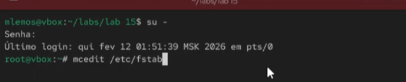
Рис. 1. Получение полномочий
администратора, открытие файла /etc/fstab в текстовом редакторе
mcedit
Комментирование строк автомонтирования
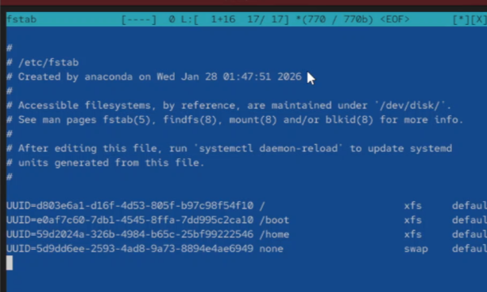
Рис. 2. Комментирование строк
автомонтирования в файле /etc/fstab
Отмонтирование разделов
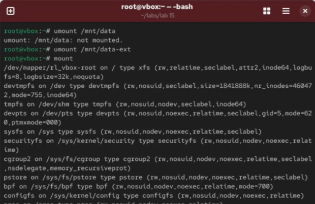
Рис. 3. Отмонтирование /mnt/data и
/mnt/data-ext. Проверка, что диски не подмонтированы
Создание новой таблицы DOS-партиции
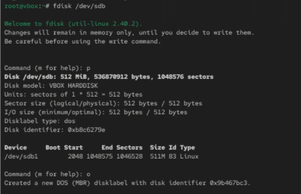
Рис. 4. Просмотр текущей разметки
дискового пространства, создание новой пустой таблицы
DOS-партиции
Проверка удаления партиций
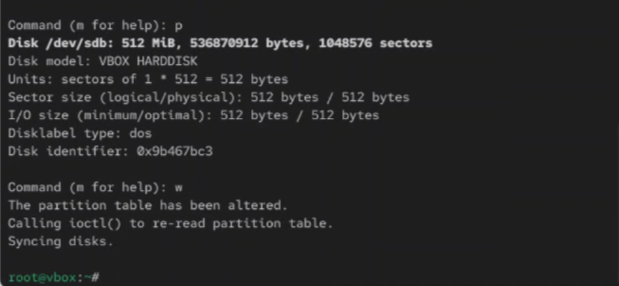
Рис. 5. Проверка удаления партиций,
сохранение изменений
Запись изменений в таблицу разделов
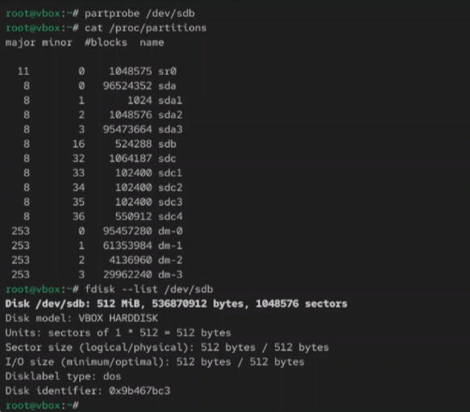
Рис. 6. Запись изменений в таблицу
разделов ядра, просмотр информации о разделах
Создание нового раздела
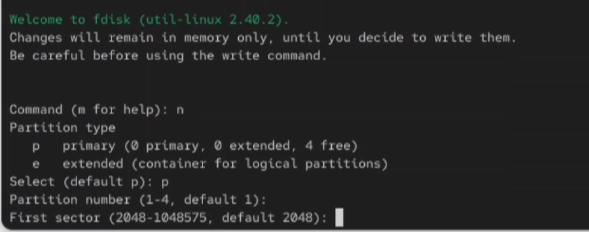
Рис. 7. Создание нового раздела, делаем
новый раздел основным
Изменение типа раздела
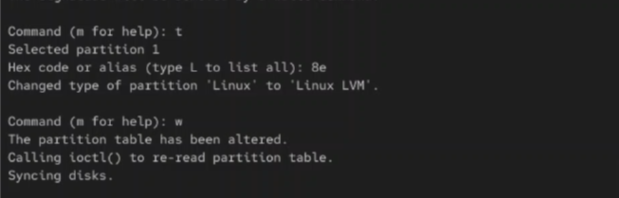
Рис. 8. Изменение типа раздела, запись
изменения на диск и выход из fdisk
Обновление таблицы разделов
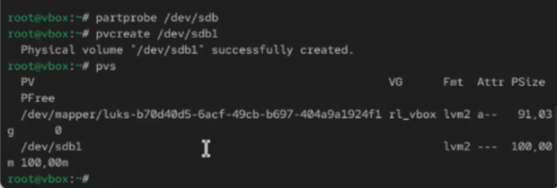
Рис. 9. Обновление таблицы разделов.
Указание раздела как физический том. Проверка создания физического
тома
Создание группы томов
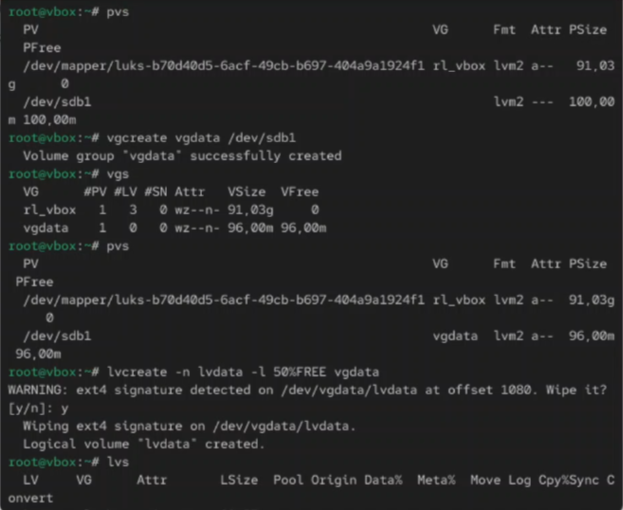
Рис. 10. Проверка доступности физических
томов в системе, создание группы томов с присвоенным ей физическим
томом, проверка успешного создания томов
Просмотр физических томов и групп томов
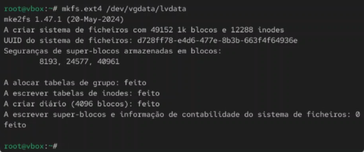
Рис. 11. Просмотр имён физических томов с
именами групп томов, которым они назначены
Создание логического тома
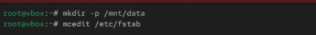
Рис. 12. Создание логического тома LVM с
именем lvdata, который будет использовать 50% доступного дискового
пространства в группе томов vgdata. Проверка успешного добавления
тома
Создание файловой системы на логическом томе
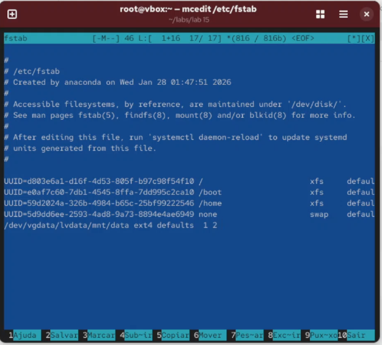
Рис. 13. Создание файловой системы поверх
логического тома
Создание папки для монтирования
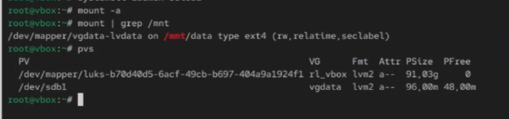
Рис. 14. Создание папки для монтирования
тома, открытие файла /etc/fstab в текстовом редакторе
mcedit
Добавление строки в /etc/fstab
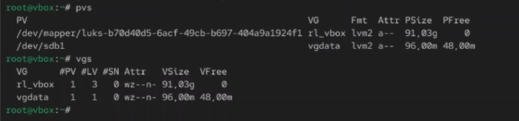
Рис. 15. Добавление строки в файл и
последующее сохранение
Проверка монтирования
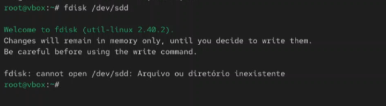
Рис. 16. Проверка монтирования файловой
системы
Отображение текущей конфигурации
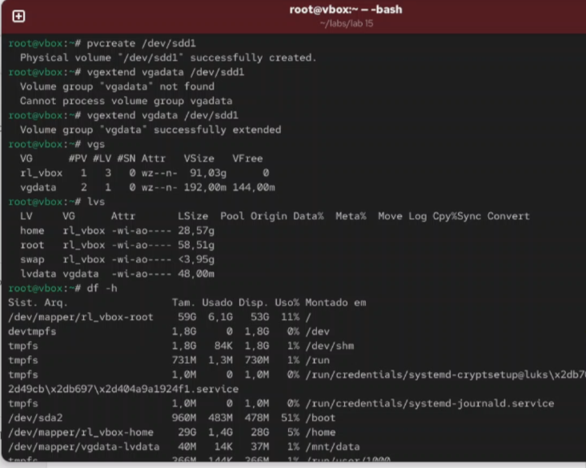
Рис. 17. Отображение текущей конфигурации
физических томов и группы томов
Добавление нового раздела
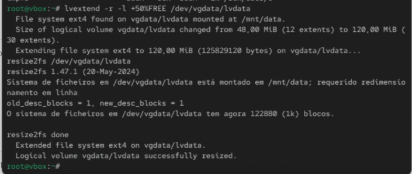
Рис. 18. Добавление раздела
/dev/sdd1
Создание физического тома и проверка
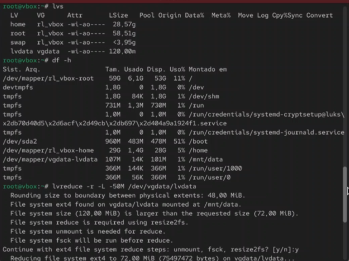
Рис. 19. Создание физического тома,
проверка увеличения размера доступной группы томов, проверка текущего
размера логического тома lvdata, проверка текущего размера файловой
системы на lvdata
Увеличение логического тома
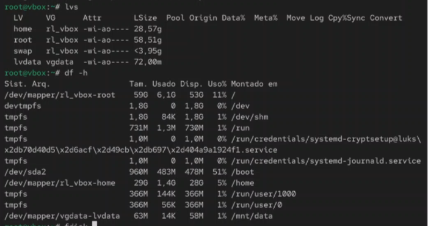
Рис. 20. Увеличение lvdata на 50%
оставшегося доступного дискового пространства в группе
томов
Рис. 22. Проверка успешного изменения
дискового пространства
Итоговая проверка LVM
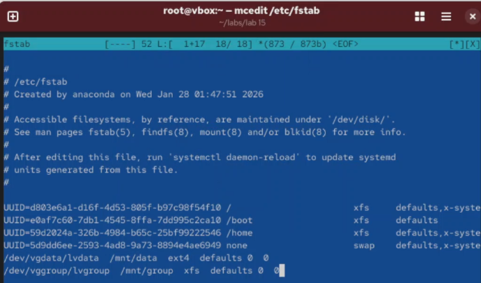
Рис. 23. Итоговая проверка конфигурации
LVM
Вывод
В ходе выполнения лабораторной работы были получены навыки управления
логическими томами (LVM) в Linux. Освоены методы создания физических
томов, групп томов и логических томов, изменения размера логических
томов, а также настройки автоматического монтирования LVM-томов.
Список литературы
[1] Linux man pages: lvm(8), pvcreate(8), vgcreate(8), lvcreate(8),
lvextend(8), lvreduce(8)